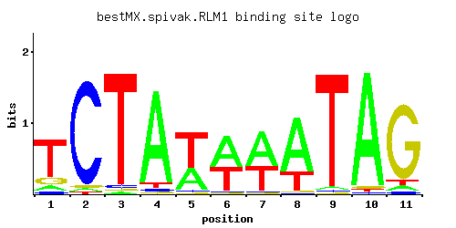

RLM1
YPL089C
MADS-box transcription factor, component of the protein kinase C-mediated MAP kinase pathway involved in the maintenance of cell integrity; phosphorylated and activated by the MAP-kinase Slt2p
Best-performing DNA-binding model.

View and copy the recommended matrices ↘
A | 0.090 0.021 0.012 0.905 0.368 0.545 0.574 0.728 0.025 0.952 0.051 C | 0.055 0.935 0.029 0.028 0.024 0.024 0.018 0.011 0.015 0.012 0.034 G | 0.138 0.028 0.012 0.017 0.012 0.015 0.011 0.011 0.011 0.024 0.863 T | 0.718 0.015 0.948 0.050 0.595 0.417 0.396 0.249 0.949 0.012 0.051
A | 9 2 1 90 36 54 57 72 2 95 5 C | 5 93 2 2 2 2 1 1 1 1 3 G | 13 2 1 1 1 1 1 1 1 2 86 T | 71 1 94 5 59 41 39 24 94 1 5
A | -1.27 -2.72 -3.28 1.04 0.14 0.53 0.58 0.82 -2.55 1.09 -1.84 C | -1.19 1.65 -1.83 -1.86 -2.01 -2.01 -2.30 -2.80 -2.48 -2.71 -1.67 G | -0.27 -1.86 -2.71 -2.36 -2.71 -2.48 -2.80 -2.80 -2.80 -2.01 1.57 T | 0.81 -3.06 1.09 -1.86 0.62 0.26 0.21 -0.25 1.09 -3.28 -1.84
Alternative candidate matrices 7
Historical matrix candidates from the original ScerTF database. Expand a source to inspect its original logo, scores, and matrix values.
RLM1_AFoat et. al.P = 1View matrix ↘
RLM1_BFoat et. al.P = 0.1476View matrix ↘
RLM1Harbison et. al.P = 7.16e-12View matrix ↘
RLM1Macisaac et. alP = 1.83e-10View matrix ↘
RLM1Morozov et. al.P = 5.14e-11View matrix ↘
RLM1Pachkov et alP = 7.86e-05View matrix ↘
RLM1Zhu J and MQ ZhangP = 1.54e-09View matrix ↘
Gene-level annotations and interactions.
Genes bound in ChIP-chip experiments 120 genes
YBL001C, YBR057C, YBR156C, YBR158W, YBR159W, YCL019W, YCL020W, YCL022C, YCL023C, YCR018C-A, YCR019W, YCR024C, YDL037C, YDL044C, YDL245C, YDL246C, YDL247W, YDR042C, YDR054C, YDR055W, YDR072C, YDR073W, YDR077W, YDR085C, YDR210W-D, YDR279W, YDR283C, YDR309C, YDR372C, YDR373W, YDR417C, YDR419W, YDR420W, YDR524C, YDR525W, YDR526C, YEL001C, YEL040W, YEL050C, YEL070W, YER001W, YER111C, YER112W, YER130C, YER131W, YER138C, YFR001W, YGL009C, YGL158W, YGL195W, YGL259W, YGR107W, YGR189C, YGR191W, YGR218W, YHL027W, YHL034C, YHL041W, YHR143W, YHR143W-A, YHR193C, YHR194W, YIL040W, YIL119C, YIL122W, YJL104W, YJL106W, YJL107C, YJL108C, YJL148W, YJL158C, YJL159W, YJR158W, YJR159W, YKL039W, YKL040C, YKL072W, YKL096W, YKL161C, YKL163W, YKL177W, YKL179C, YKR091W, YKR102W, YKR103W, YLL027W, YLR035C-A, YLR105C, YLR110C, YLR111W, YLR154C, YLR300W, YLR332W, YLR342W, YLR354C, YLR368W, YLR390W-A, YLR413W, YLR463C, YLR465C, YLR467W, YML055W, YML056C, YML124C, YMR013C, YMR014W, YMR049C, YNL066W, YNR050C, YOL159C, YOL160W, YOR058C, YOR108W, YOR236W, YOR268C, YOR269W, YOR315W, YOR355W, YPR195C, YPR197C
Genes affected by TF deletion 20 genes
YNL276C, YFR006W, YOR290C, YPL089C, YLR155C, YLR157C, YEL023C, YLR099C, YLR101C, YBL031W, YLR158C, YLR160C, YJR152W, YLR258W, YLR294C, YOL122C, YDR174W, YLR112W, YDR395W, YKR062W